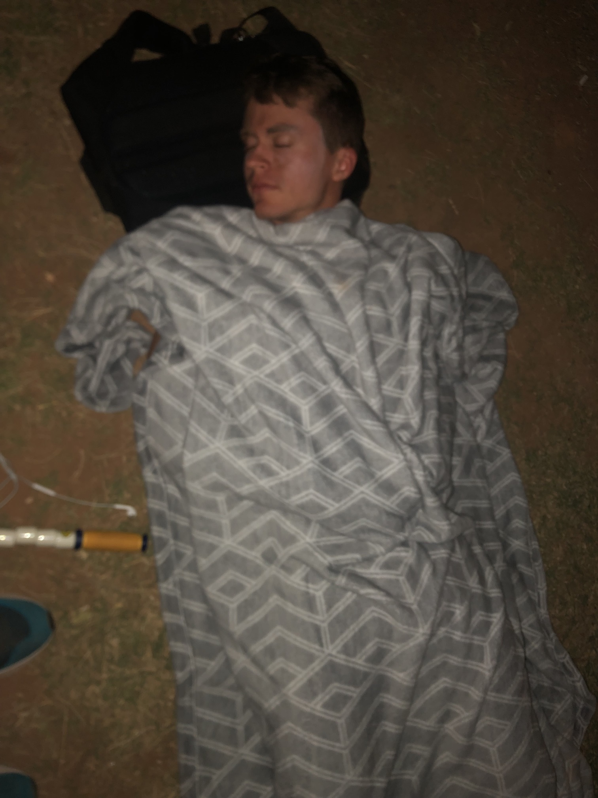

Literature, experiments, thoughts.
Some endurance efforts I've attempted, completed, or plan to attempt involve eventual sleep deprivation in the later stages of the effort. My second Everesting attempt had me burning the midnight oil. My first go at 24 Hours in the Canyon had me riding in the dead of night. Some of the mountains I want to summit in a single push will require no sleep for many, many hours while still maintaining mental focus and physical effort.
Learning how to deal with and be comfortable with lack of sleep for an extended period of time is important for the competitive edge it provides. While others are getting the precious sleep they require, the trainee who spent the time depriving themselves earlier is now gaining a lead with every pedal stroke, every foot strike, every breath. Like the "sweat in training to prevent bleeding in war" quote:
He who trains without sleep will be able to compete with sleep.
The importance of attempting to train this has been established, but can it really be trained? The literature should give us a clue, while the experiments will provide personalized results. But this is only one part of a multi-faceted solution and it would be naive to only focus on that. The other part is approaching it tactically through external means, such as stimulants and sources of motivation. While this is not the focus of the article, tactical methods are discussed.
And to pre-register my hypotheses, I expect a few things to come out of this:
Chiara Gattoni's thesis, Mental Fatigue and Sleep Deprivation: Effects, Mechanisms, and Countermeasures in Endurance Exercise Performance, offers an abundance of information on the subject through theory and publications. Chapters include:
Each of the above will be reviewed for both information and experimental methods.
The official definitions of mental fatigue and sleepiness are discrete and they do not overlap. Indeed, although they both contribute to performance impairments, sleepiness entails sleep deprivation/lack of sleep, whereas mental fatigue implies effort (Ackerman, 2011) .
The Epworth Sleepiness Scale (Johns, 1991) and the Sleep Wake Activity Inventory (Rosenthal et al., 1993) are the most used ones, measuring subjective sleep propensity and multidimensional aspects of sleepiness, respectively.
Sleep deprivation results in overall mood and emotional functioning changes, such as increased levels of subjective fatigue, sleepiness, confusion, stress and depression (Dinges et al., 1997) which are associated with decreased levels of vigour (Martin et al., 1986; Meney et al., 1998) and liveliness (Scott et al., 2006; Skein et al., 2011).
It is easy to see why getting used to sleep deprivation is important before the "big day"—experiencing fatigue, confusion, stress, and depression for the first time under stressful conditions can destroy a person.
no effects have been shown on modified decision making Stroop task performance during 96-125 h of adventure racing following 100 hours of sleep deprivation (Lucas et al., 2009)
This seems wrong to me, so I looked at the study (Lucas 2009, linked above) and it appears Gattoni misinterpreted the results of "Complex response times were affected by the race (16% slower), although not significantly so (P = 0.18) (side note: what kind of p-value is that?!), and were dependent on exercise intensity (less so at 50% peak power output after racing)." I'm also curious about the mechanism of leg and arm strength decreasing a mere 17% and 11% after 96-125 hours of racing. Different fibers being recruited was my initial thought, but strength endurance was minimally affected as well. The stated "within 3 h" recovery period is a bit longer than I would have expected and may contribute to the surprising lack of strength loss.
(Lucas 2009) brings up another good point that will be touched on later (emphasis the entire paragraph):
This hypothesis [Dinges 1992] predicts that the greater the physiological sleepiness brought on by sleep loss, the more dependent the brain becomes on the local environment to maintain wakefulness and the more vulnerable it becomes to environmental monotony. Motivation and incentive can contribute to, or override, this environmental effect, but for a limited time (Dinges, 1992).
Gattoni discusses the conflicting results of different sleep restriction studies on the performance of athletes:
Regarding sleep restriction, it has been found that one partially disrupted night of sleep (i.e. 3 h of sleep restriction) does not affect the performance of 7 cyclists during an incremental cycling test to exhaustion (Mougin et al., 1991) . The same results have been shown by (Reilly & Deykin, 1983), who have seen no impairments in 8 trained subjects during an incremental running test until exhaustion following three nights of sleep restriction, and by (Mejri et al., 2014), who have found no differences in the total distance covered during a Yo-Yo intermittent recovery test (level one) in 10 Taekwondo players following partial sleep recovery. By contrast, it has been demonstrated that two nights of sleep restriction significantly impair the maximal work rate during a similar incremental cycling test protocol until exhaustion as the one used by Mougin and colleagues (Mougin et al., 2001).
She then concedes as to the dubiousness of these studies:
these results might be due to the relatively small sample sizes used, which might have contributed to reach not enough statistical power, and/or to a substantial variability on the effects of lack of sleep among the subjects tested
The sample sizes of seven, eight, and 10 are extremely low for my liking. The YYIR also focuses on aerobic fitness through high-intensity work, rather than long, slow efforts. I'm not sure how representative this is.
The effects of sleep deprivation are fairly straightforward for longer efforts:
36 h and 50 h of sleep deprivation impairs endurance exercise tolerance by 11% (Martin, 1981) and 20% respectively (Martin & Chen, 1984)
The rest of this section goes over neurobiological mechanisms of sleep deprivation, countermeasures (discussed here [FINISH]), and a summary of what was discussed.
one night of SD did not decrease endurance exercise performance during a TT, showing that maximal endurance exercise performance seems to be more robust to 25-h SD than vigilance. However, both 40-min submaximal endurance exercise and cognitive performance have been negatively affected by SD and positively recuperated by one night of recovery sleep.
The highlight of the paper appears in the Discussion section:
Previous studies have demonstrated that acute SD impairs endurance performance by negatively affecting RPE.2 In the present study, the participant reported slightly lower RPE during the multiday test after 6-week SDT, suggesting that this new form of training may reduce the negative effects of SD on perception of effort and endurance performance. This finding was corroborated by the substantial reduction in the effort dimension of subjective workload, which confirmed that the participant perceived less effort during the post-SDT multiday test. Considering that his fitness level and the HR and physical demand during the multiday test did not substantially change in response to 6-week SDT and physical training, the considerable reduction in mental demand could be the key factor mediating the positive effect of SDT on perception of effort during the multiday test.
An interview between Gattoni and ultramarathon coach Jason Koop can be found here:
PDF link: Sleep Deprivation and the Effect on Exercise Performance
Van Helder and Radomski find that:
Sleep deprivation of 30 to 72 hours does not affect cardiovascular and respiratory responses to exercise of varying intensity, or the aerobic and anaerobic performance capability of individuals. Muscle strength and electromechanical responses are also not affected. Time to exhaustion, however, is decreased by sleep deprivation.
A few notes:
And a few excerpts:
In another study, 36 hours of sleep deprivation reduced the subjects' ability to perform a treadmill walk to exhaustion at 80% of their V02max (Martin 1981). Sleep deprivation also decreased significantly the time to exhaustion by II %, whereas oxygen uptake (V02), carbon dioxide production (V02), ventilatory rate (VE), heart rate and the respiratory exchange ratio remained unaltered after 36 hours of sleep loss.
72 hours of total sleep deprivation in untrained subjects exercising at 40%, 60% and 80% of V02max had no significant effect on heart rate, V02, VCO2, and the respiratory quotient, except for an increase in gross mechanical efficiency compared with non-deprived subjects (Horne & Pettitt 1984). The observed increases in gross mechanical efficiency after sleep deprivation were not due to a procedural or measurement error, or a training effect.
The authors ultimately conclude:
The inability to maintain a high level of physical performance during sleep deprivation can be attributed primarily to psychological fatigue as witnessed by increased rating of perceived exertion scores in face of unchanged heart rates.
PDF link: How much does sleep deprivation impair endurance performance? A systematic review and meta-analysis
Highlights below. Note the difference in results from Van Helder & Radomski's work.
- Sleep deprivation causes a moderate deleterious effect on endurance performance.
- Sleep deprivation similarly impairs endurance performance in untrained, recreationally-trained, and trained people, but its effect on well-trained and professional endurance athletes is unknown.
- One or more nights of partial sleep deprivation or one night of total sleep deprivation similarly compromise endurance performance. Uncertainties about the effect of more than one night of total sleep deprivation warrant more studies.
- Sleep deprivation impairs walking, running, and cycling endurance performance regardless of the exercise endpoint being unknown (i.e. incremental or constant load tests) or known (i.e. time trial tests) and assessment time. However, sleep deprivation causes a more deleterious effect on endurance performance in exercises lasting more than 30 min.
[FINISH]
Individual sessions are documented here for posterity.
The Everesting and 24-hour race tell me that proper fueling and effort management are the key to successful endurance efforts that enter the realm of upsetting one's circadian rhythm. While I still believe that becoming accustomed to being sleepy and putting out not-insignificant physical effort is valuable, I am satisfied with what I've discovered through these few experiments and am not willing to bear the cost of more.
In sum: take it easy and caffeinate.
Preemptive measures should be taken before reactive measures are required because once reactive measures are needed, it's almost always too late. Regardless, preventive measures may not always be available.
From Lucas et al.:
[Dinges 1992's] hypothesis predicts that the greater the physiological sleepiness brought on by sleep loss, the more dependent the brain becomes on the local environment to maintain wakefulness and the more vulnerable it becomes to environmental monotony. Motivation and incentive can contribute to, or override, this environmental effect, but for a limited time
Administering stimulants is an easy, inexpensive, proven option for both staving off sleepiness and improving performance (dependent on the drug).
Kreutzer et al.'s Caffeine Supplementation Strategies Among Endurance Athletes polls a range of athletes' caffeine strategies, but only weakly quantifies the effects.
Wang et al.'s Effects of Caffeine Intake on Endurance Running Performance and Time to Exhaustion: A Systematic Review and Meta-Analysis found that:
caffeine intake showed a meaningful ergogenic effect in increasing the time to exhaustion in running trials and improving performance in running time trials
The standard caffeine dose recommendation for performance improvements are 3-6 mg/kg of body weight one hour before exercise. However, these recommendations assume shorter efforts, even if they are labeled as "endurance". Hodges' How Much Caffeine is Safe to Ingest During an Ultramarathon?
[FINISH SUMMARY OF HODGES ARTICLE]My personal, uninformed strategy of caffeination as of 26 February 2024 has been using caffeinated Gu Roctane (CGR) in addition to palatable foods: the foods deliver the calories while the gel delivers the wakefulness. I take one CGR every 1.5 hours or so starting around 6:00pm and on a as-desired basis during the day, leading to 200+ mg and 400+ mg of caffeine for 12- and 24-hour efforts, respectively. Given that exercising metabolizes caffeine faster than not, I suspect my daily caffeine limit during these efforts is higher than the FDA's suggestion of 400 mg.
Bracket et al.'s Effect of cocaine on exercise endurance and glycogen use in rats found that:
cocaine administration (20 mg/kg) before submaximal exercise dramatically alters glycogen metabolism during exercise, and this effect has a negative impact on exercise endurance.
Braiden et al.'s Effects of cocaine on glycogen metabolism and endurance during high intensity exercise found that:
cocaine treatment (20 mg.kg-1) immediately prior to intense exercise causes accelerated glycogen degradation and lactate accumulation in white vastus muscle during exercise and premature fatigue.
Dufka et al.'s The effects of inhaled L-methamphetamine on athletic performance while riding a stationary bike: a randomised placebo-controlled trial found that:
Modest doses of inhaled L-methamphetamine probably do not improve athletic performance but do minimally raise diastolic blood pressure.
No literature was found regarding how body position (lying down, standing up, sitting, etc) affected sleepiness. I posit that standing is better than sitting than lying due to THE latter requiring less energy and simulating standard sleeping positions. Standing up unsupported requires some amount of energy and focus to remain standing and balanced. Sitting in a chair requires energy to maintain posture. Lying down requires no energy and mimics virtually everyone's normal sleeping position.
Moral of the story: continue standing (and moving) to avoid sleepiness.